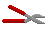
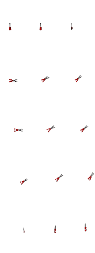
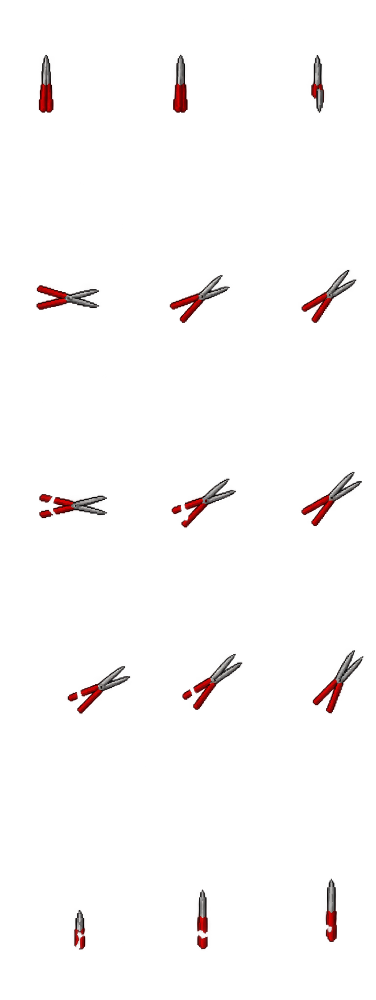

In-game sword directions — occlusion reference only

Each panel: existing shears left, new candidate right. Eight directions; walk cycle 0,1,2,1. No attack frames.
Not installed. Grip positions are approximate; some generated handles have imperfect fist gaps. These isolated sprites do not simulate body occlusion and are not in-game validated.


